LOST IN TRANSLATION
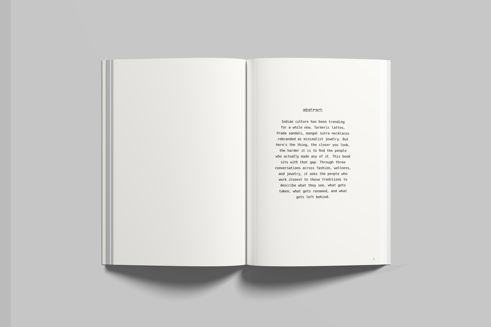
A book project exploring the untranslatable — words, feelings, and ideas that exist in one language but resist all equivalents in another. The design system mirrors this idea: a deliberate tension between familiar serif body text and unexpected structural interruptions.
Typography is treated as an architectural element throughout, with generous white space acting as visual breathing room for ideas that resist containment.
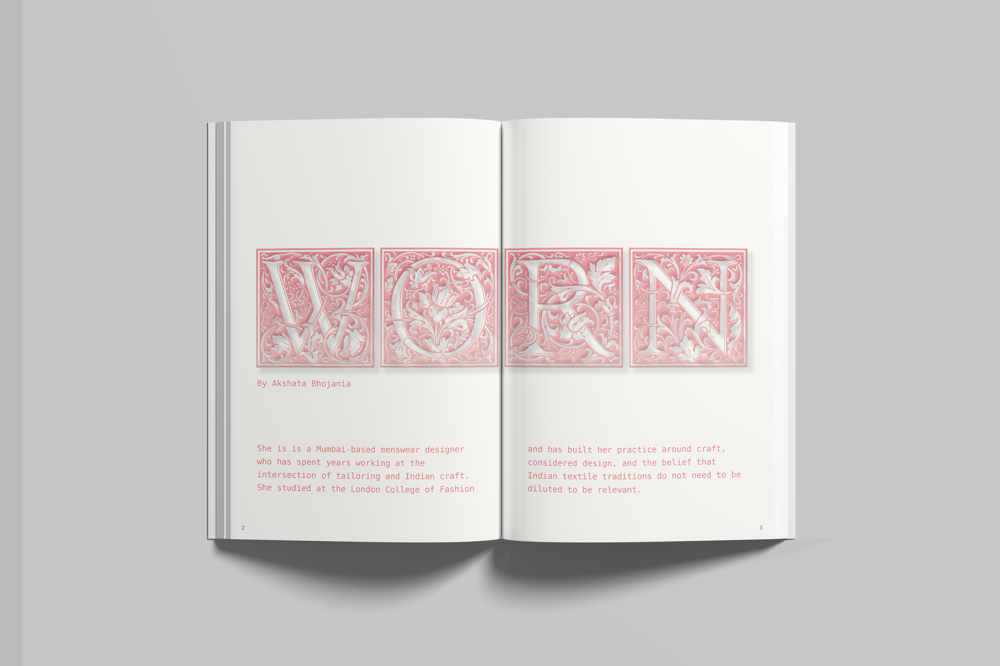
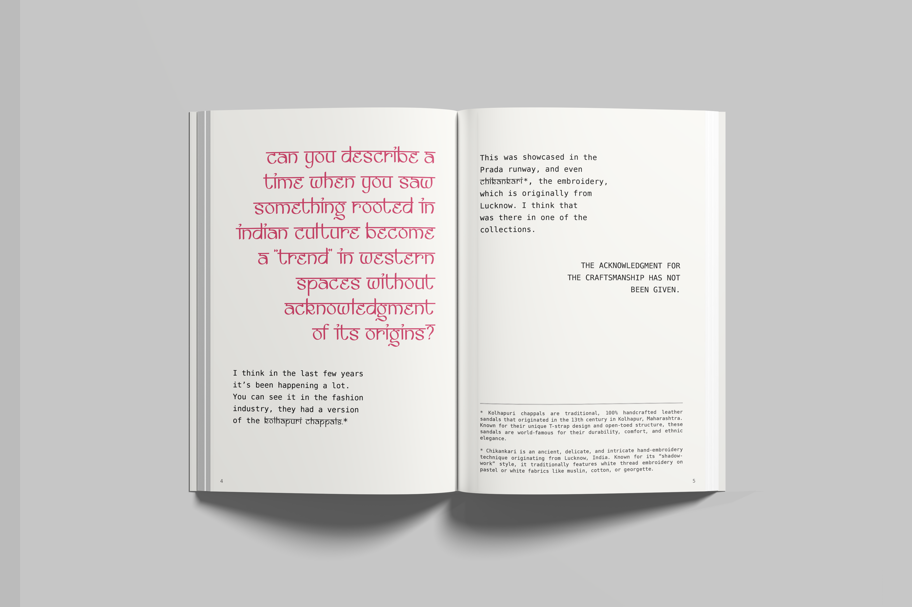
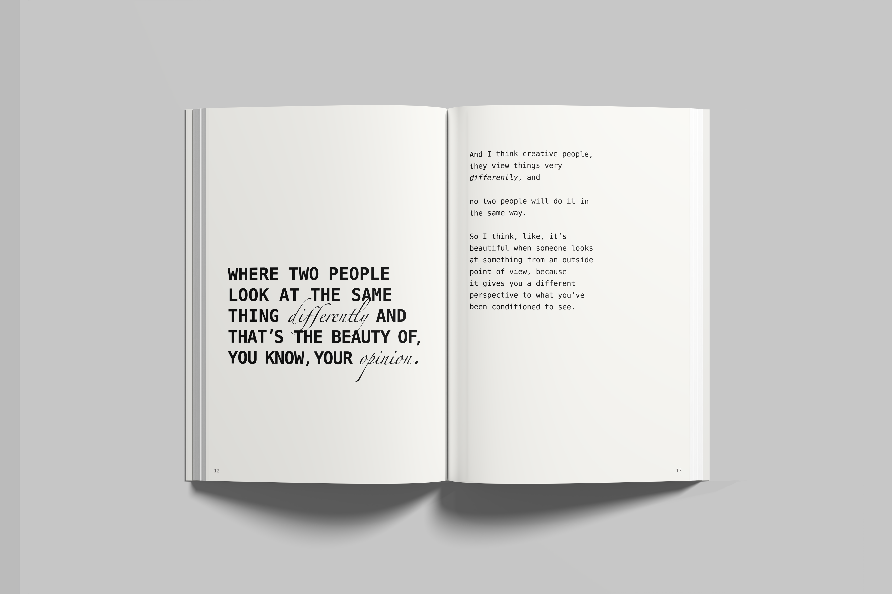
"The Japanese call it mono no aware — the gentle sadness of transient things. No single word in English holds the same weight."
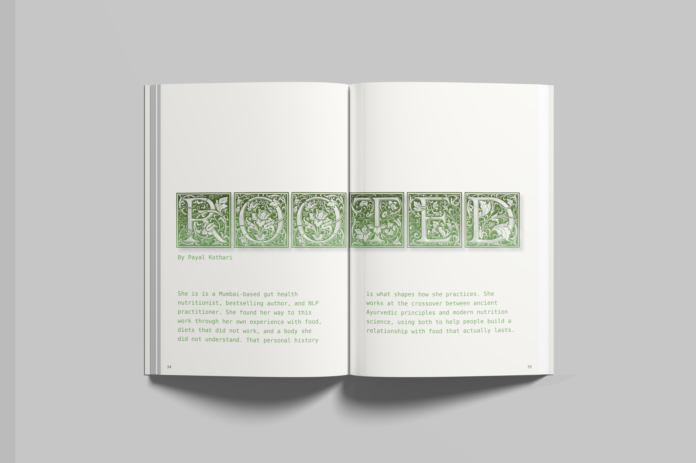
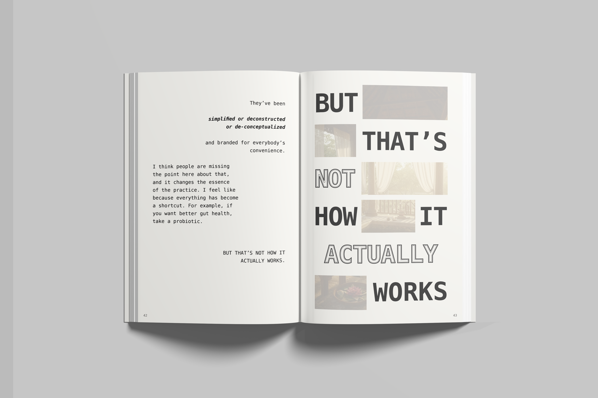
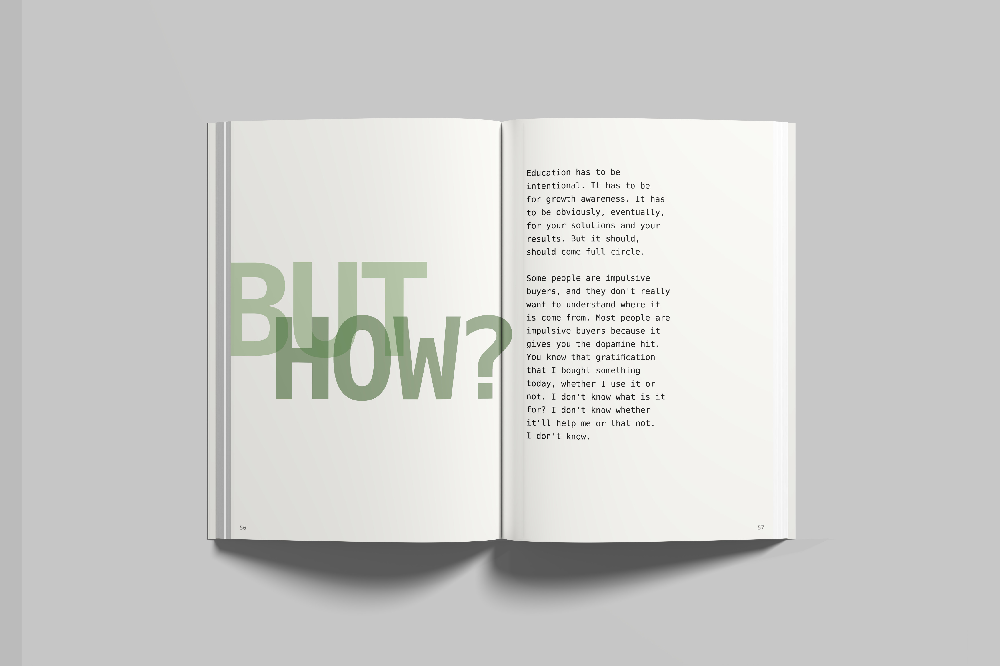
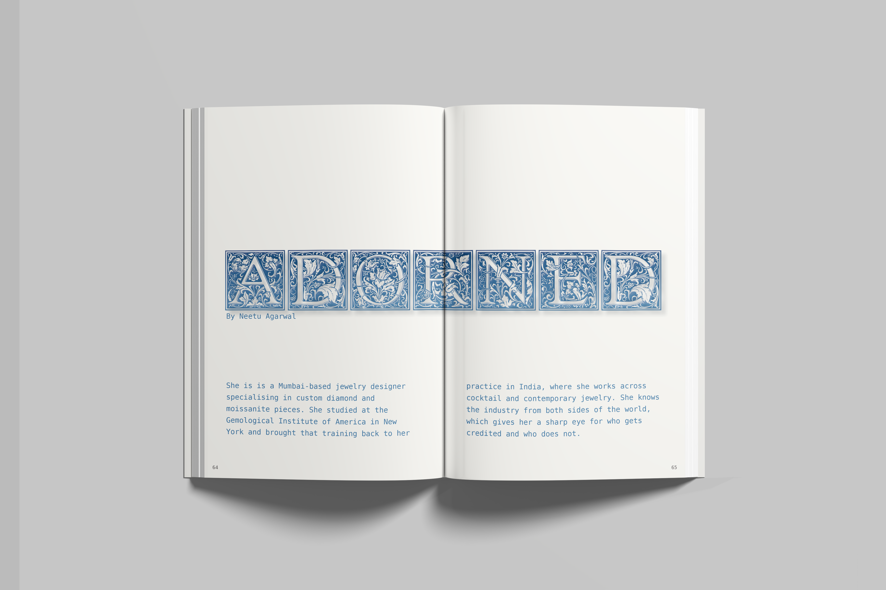
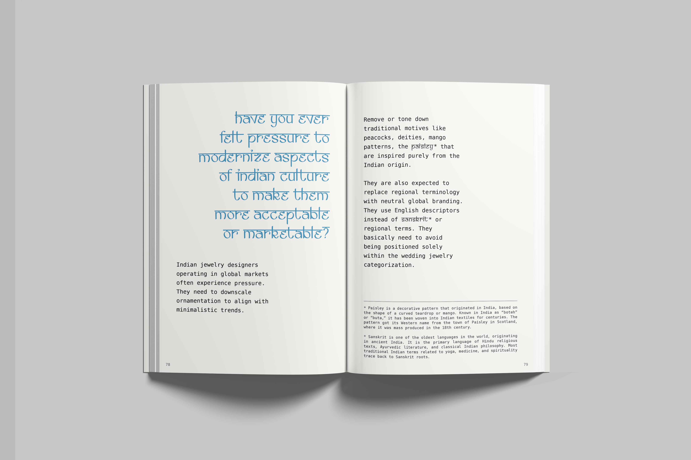
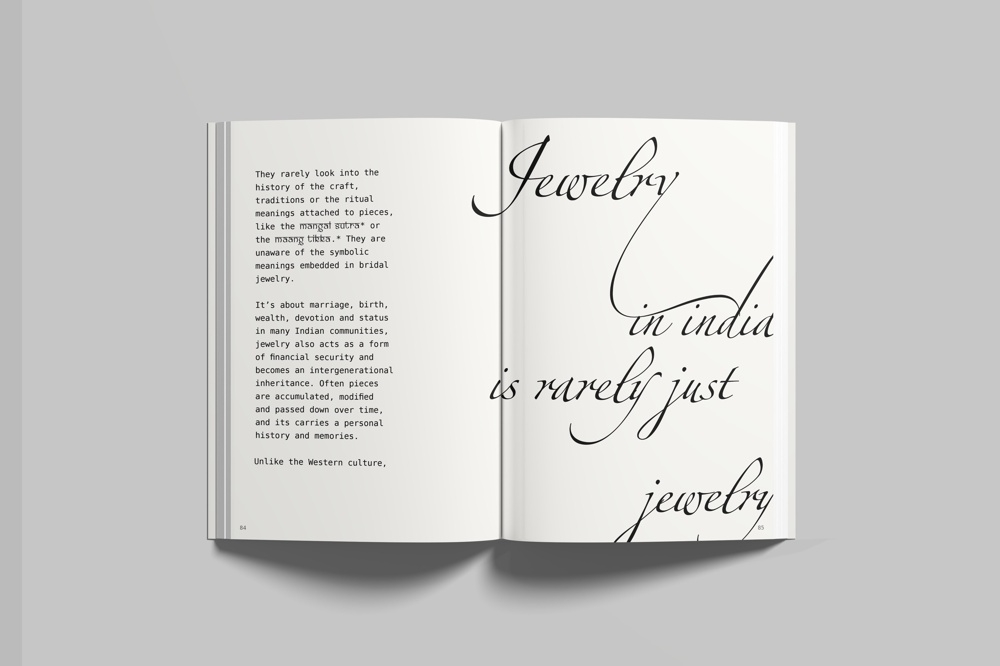
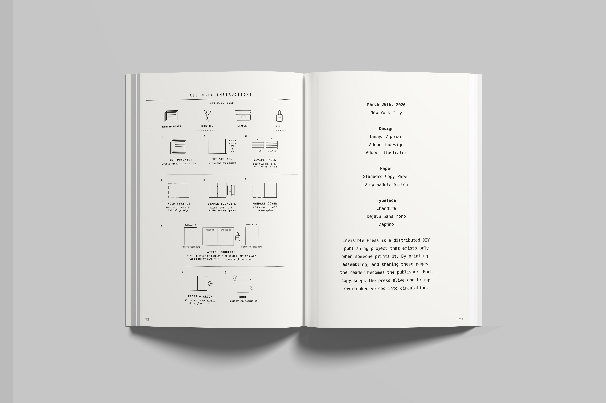